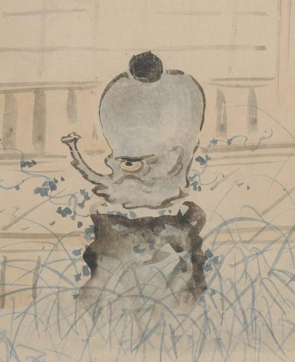

半挿のような形をした、一つ目で口をへの字に結んだ妖怪が、庭に置かれたつくばい状の石の上に乗っている。
出典：親書誌：U426_nichibunken_0435：［妖怪絵巻］／日付：2017／資源識別子：U426_nichibunken_0435_0001_0000
Copyright (c)2010- International Research Center for Japanese Studies, Kyoto, Japan. All rights reserved.